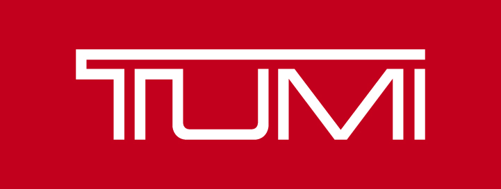

홈 > 브랜드 매거진 > 투미
투미
투미(TUMI)는 1975년 찰리 클리퍼드가 미국에서 설립한 프리미엄 여행가방·비즈니스 백 브랜드다. 내구성 높은 발리스틱 나일론 소재로 알려졌으며, 2016년 쌤소나이트가 인수했다.
산업 분야 패션·럭셔리 · 공개 등급 자료 기반 · 브랜드 평가 4.3 ★


한눈에 보는 브랜드
투미(TUMI)는 1975년 찰리 클리퍼드가 미국에서 설립한 프리미엄 여행가방·비즈니스 백 브랜드다. 내구성 높은 발리스틱 나일론 소재로 알려졌으며, 2016년 쌤소나이트가 인수했다.
브랜드 관점
투미는 발리스틱 나일론 내구성과 정교한 수납 설계로 비즈니스 트래블 프리미엄 시장을 대표한다. 헤리티지, 핵심 제품, 모회사 구조를 함께 보면 패션·럭셔리 안에서의 위치가 또렷해진다.
시작과 성장
투미는 1975년 찰리 클리퍼드(Charlie Clifford)가 설립한 미국의 프리미엄 가방브랜드로, 여행 컬렉션부터 백팩, 브리프케이스, 액세서리까지 다양한 제품들을 선보여왔다. 약 40년의 역사 동안 끊임없이 신기술을 개발하며 가방의 형태, 재질, 수납공간 등에 대한 기존 시장의 고정관념을 무너뜨리는 혁신적인 브랜드로 자리매김했다.
브랜드 아이덴티티
투미는 합리적인 스마트 럭셔리 브랜드를 표방한다. 이를 위해, '투미 디퍼런스(TUMI Difference)'라는 원칙에 따라 뛰어난 제품과 서비스를 제공하고 있다.
그 결과, 투미는 성공과 신뢰의 상징으로 자리매김하며, 세계 유명인사들에게 사랑받는 브랜드가 되었다.
확장 지식
미국 뉴저지 에디슨에 본사를 두며 2016년 쌤소나이트가 인수했다.
제품과 서비스
캐리어·백팩·브리프케이스·트래블 액세서리를 전개한다. Alpha 비즈니스 라인과 경량 Voyageur 등이 대표적이다.
사람들
창업자는 찰리 클리퍼드(Charlie Clifford)다. 브랜드명은 그가 평화봉사단으로 머문 페루의 의식용 칼 'tumi'에서 따왔다.
현재 상태
타임라인
BI/CI 변천사
함께 읽을 브랜드
 패션·럭셔리 · 매거진 완성몽블랑
패션·럭셔리 · 매거진 완성몽블랑몽블랑은 필기구를 기록의 도구에서 성취와 품격의 상징으로 끌어올린 브랜드다. 만년필은 기능 제품이지만, 브랜드가 축적한 이미지는 서명, 의사결정, 지적 권위 같은 장...
패션·럭셔리 · 자료 기반리모와리모와(RIMOWA)는 1898년 파울 모르첵이 독일 쾰른에서 설립한 프리미엄 여행가방 브랜드다. 1937년 알루미늄 캐리어를 상용화했고 세로 그루브 디자인이 시그니...
 패션·럭셔리 · 매거진 완성코치
패션·럭셔리 · 매거진 완성코치코치는 실용적 가죽 제품을 일상적 럭셔리의 영역으로 끌어올린 브랜드다. 과시적 명품보다 접근 가능한 품질과 라이프스타일 이미지를 통해 오래 쓰는 가방의 감각을 브랜드...
 패션·럭셔리 · 편집 검수디젤
패션·럭셔리 · 편집 검수디젤디젤(Diesel)은 1978년 렌조 로소가 이탈리아 브레간체에서 설립한 데님 중심의 컨템포러리 패션 브랜드다. 도발적이고 실험적인 디자인으로 데님 헤리티지를 재해석...
 패션·럭셔리 · 편집 검수리바이스
패션·럭셔리 · 편집 검수리바이스리바이스는 청바지를 작업복에서 세대와 태도를 드러내는 문화적 유니폼으로 바꾼 브랜드다. 튼튼한 바지는 시간이 지나며 자유, 젊음, 반항, 일상성을 담는 상징으로 확장...
 패션·럭셔리 · 편집 검수자라
패션·럭셔리 · 편집 검수자라자라는 패션을 예측하기보다 시장의 반응을 빠르게 읽고 다시 매장으로 돌려보내는 브랜드다. 트렌드를 길게 기획하는 대신 고객 반응과 유통 속도를 무기로 삼아, 패션을...
 패션·럭셔리 · 매거진 완성루이비통
패션·럭셔리 · 매거진 완성루이비통루이비통은 여행가방에서 출발했지만, 이동의 기능을 럭셔리한 삶의 상징으로 확장했다. 브랜드의 헤리티지는 물건을 담는 도구가 아니라 이동하는 사람의 취향과 지위를 표현...
 패션·럭셔리 · 매거진 완성빅토리아 시크릿
패션·럭셔리 · 매거진 완성빅토리아 시크릿빅토리아 시크릿은 속옷을 기능적 제품이 아니라 무대화된 판타지와 자기표현의 이미지로 포장한 브랜드다. 브랜드는 제품보다 쇼, 모델, 시각적 연출을 통해 소비자가 상상...